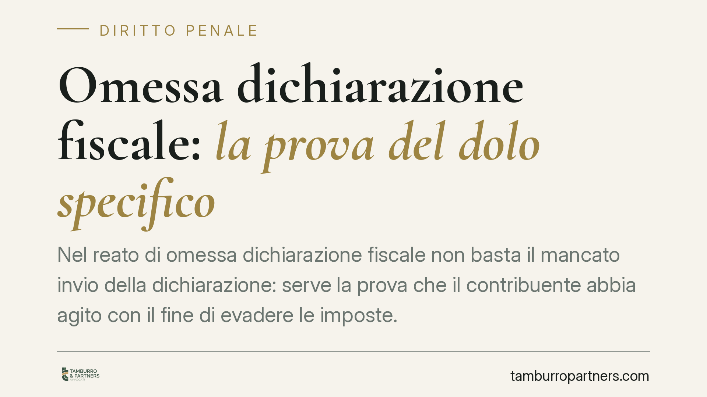

Omessa dichiarazione fiscale: la prova del dolo specifico
Nel reato di omessa dichiarazione fiscale non basta il mancato invio della dichiarazione: serve la prova che il contribuente abbia agito con il fine di evadere le imposte. Un recente orientamento della Cassazione penale torna sullo standard probatorio richiesto per il dolo specifico, chiarendo che gli indizi devono essere gravi, precisi e concordanti. Un punto che incide direttamente sulla difesa di chi riceve una contestazione.

Il fatto e la questione giuridica
Il reato di omessa dichiarazione punisce chi, al fine di evadere le imposte sui redditi o sul valore aggiunto, non presenta la dichiarazione annuale quando era obbligato a farlo. La norma di riferimento è l'articolo 5 del Decreto legislativo 74/2000.
Un recente arresto della Cassazione penale è tornato su un nodo centrale: non è sufficiente accertare l'omissione materiale per fondare la condanna. Occorre dimostrare che l'omissione fosse sorretta da un preciso scopo di evadere. È su questo passaggio, spesso trascurato nelle contestazioni, che si gioca gran parte della difesa.
Inquadramento normativo
L'articolo 5 del D.lgs. 74/2000 configura un reato a dolo specifico. La distinzione rispetto al dolo generico è decisiva.
Nel dolo generico è sufficiente che l'autore abbia voluto la condotta e il suo risultato: qui, la volontà di non presentare la dichiarazione. Nel dolo specifico, invece, la legge richiede un elemento ulteriore: un fine particolare che va oltre la condotta stessa. Nel caso dell'articolo 5, questo fine è l'evasione delle imposte. Chi non presenta la dichiarazione deve averlo fatto *per* evadere, non per negligenza, disorganizzazione o errore.
Il reato scatta solo se l'imposta evasa supera la soglia di punibilità, fissata in 50.000 euro per ciascuna imposta (la cifra va sempre verificata alla luce degli aggiornamenti normativi, che nel tempo hanno modificato gli importi). Sotto soglia resta la sola responsabilità amministrativa tributaria.
È qui che si colloca il principio ribadito dalla Corte: la prova del dolo specifico non può essere ricavata automaticamente dal superamento della soglia o dalla mera omissione. Deve poggiare su elementi concreti, valutati secondo il canone degli indizi gravi, precisi e concordanti previsto dall'articolo 192, comma 2, del codice di procedura penale.
Lo specifico apporto della pronuncia
Il contributo dell'orientamento in esame sta nell'aver applicato in modo rigoroso lo standard dell'articolo 192 c.p.p. proprio al profilo soggettivo. In concreto: la prova del fine di evasione può essere indiziaria, ma ciascun indizio deve essere grave, preciso e concordante con gli altri, e l'insieme deve escludere ricostruzioni alternative ragionevoli.
Non bastano quindi l'entità dell'imposta non versata o la circostanza che il contribuente conoscesse l'obbligo. Occorre un quadro che renda la finalità evasiva l'unica spiegazione plausibile dell'omissione. È un approccio garantista, che sposta l'attenzione dal dato oggettivo alla reale rappresentazione e volontà dell'imputato.
Implicazioni pratiche
Per chi gestisce un'impresa o svolge attività professionale, il punto è netto: ricevere una contestazione ex articolo 5 non equivale a essere condannati. La responsabilità penale è autonoma rispetto alla sanzione amministrativa tributaria. Si possono avere debiti con il Fisco e irregolarità contabili senza che ricorra il reato, se manca la prova del fine di evadere.
Circostanze come una crisi di liquidità, l'affidamento a un consulente poi rivelatosi inadempiente, errori nella percezione dell'obbligo dichiarativo o eventi che hanno impedito l'adempimento possono incidere sull'elemento soggettivo. Vanno però documentate e fatte valere nei tempi e nei modi corretti.
Cosa fare in concreto
- Verifica le soglie. Accerta se l'imposta contestata supera effettivamente il limite di punibilità vigente per il periodo d'imposta, distinguendo tra le singole imposte.
- Ricostruisci la documentazione. Raccogli corrispondenza con il commercialista, incarichi conferiti, prove della delega contabile e di eventuali impedimenti all'adempimento.
- Isola l'elemento soggettivo. Individua gli elementi che contrastano la tesi del fine di evasione: errori, dipendenza da terzi, situazioni di fatto che spiegano l'omissione.
- Valuta la posizione tributaria in parallelo. Tieni distinti il procedimento penale e quello amministrativo, verificando l'eventuale rilievo di ravvedimento o definizioni agevolate.
- Attiva la difesa tecnica per tempo. L'intervento già alla ricezione dell'avviso consente di impostare in anticipo la strategia probatoria sull'elemento soggettivo.
---
*Contributo informativo a cura di Tamburro & Partners - Avv. Giuseppe Tamburro. Non costituisce parere legale.*
Ogni condominio ha una storia a sé.
Se gestisci un'amministrazione e vuoi un confronto su una specifica questione condominiale, scrivi allo studio. Ti rispondiamo entro un giorno lavorativo.